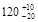

КОМПЛЕКС ПЕРСПЕКТИВНОГО РАЗВИТИЯ г. МОСКВЫ
УПРАВЛЕНИЕ РАЗВИТИЯ ГЕНПЛАНА г. МОСКВЫ
МОССТРОЙЛИЦЕНЗИЯ
ВЕДОМСТВЕННЫЕ СТРОИТЕЛЬНЫЕ НОРМЫ
ИНСТРУКЦИЯ
по производству земляных работ
в дорожном строительстве
и при устройстве
подземных инженерных сетей
ВСН 52-96
МОСКВА – 1998
СОДЕРЖАНИЕ
Инструкция по производству земляных работ в дорожном строительстве и при устройстве подземных инженерных сетей разработана кандидатами технических наук В.М. Гольдиным, Л.В. Городецким, инженером В.Ф. Деминым (лаборатории дорожного строительства НИИМосстроя) и инженером Б.В. Маркиным (ОАО Мосинжстрой) при участии Ю.И. Столярова, к.т.н. В.Д. Фельдмана (Мосстройлицензия).
Инструкция составлена на основе научно-исследовательских работ, выполненных лабораторией дорожного строительства НИИМосстроя, СоюздорНИИ, ЦНИИОМТП, МАДИ, а также многолетнего опыта, накопленного дорожно-строительными и специализированными организациями Комплекса перспективного развития г. Москвы и других городов России.
Инструкция согласована с институтом Мосинжпроект, ОАО Мосинжстрой и трестом Гордорстрой.
|
Комплекс перспективного развития г. Москвы |
Ведомственные строительные нормы |
ВСН
52-96 |
|
Управление развития генплана г. Москвы |
Инструкция по производству земляных работ в дорожном строительстве и при устройстве |
Взамен |
|
Мосстройлицензия |
подземных инженерных сетей |
|
Внесена |
Утверждена «15» сентября 1996 г. |
Дата введения в действие «1» января 1997 г. |
1.1. Настоящая «Инструкция» распространяется на производство земляных работ при строительстве магистральных и внутриквартальных дорог, а также при устройстве подземных инженерных сетей в г. Москве.
1.2. Инструкция предназначена для практического руководства при производстве земляных работ.
1.3. Сооружение земляного полотна дорог должно производиться согласно требованиям СНиП III-40-90 («Автомобильные дороги. Правила производства и приемки работ. Приемка в эксплуатацию») и СНиП III-1-90 («Земляные работы») по рабочим чертежам, разработанным институтом Мосинжпроект, управлением Моспроект и утвержденными в установленном порядке на основе разработанных проектов производства работ.
1.4. Земляные работы при устройстве подземных инженерных сетей должны выполняться в соответствии с «Правилами производства работ по прокладке и переустройству подземных сооружений в г. Москве».
2.1. Устройство насыпей земляного полотна дорог.
2.1.1. Грунты, применяемые для возведения насыпей, должны обеспечивать прочность и устойчивость земляного полотна дорожной одежды.
2.1.2. Для возведения насыпей должны применяться грунты, состояние которых под влиянием природных факторов практически не изменяется или изменяется незначительно и не влияет на прочность и устойчивость земляного полотна. К ним следует отнести применяемые в г. Москве песчаные грунты, за исключением мелких недренирующих и пылеватых песков (табл. 2.1), и супеси легкие крупные (табл. 2.2).
Таблица 2.1.
|
Содержание частиц в % от общей массы сухого грунта |
|
|
Песок гравелистый |
Масса частиц крупнее 2 мм составляет более 25 % |
|
Песок крупный |
Масса частиц крупнее 0,5 мм составляет более 50 % |
|
Песок средней крупности |
Масса частиц крупнее 0,25 мм составляет более 50 % |
|
Песок мелкий |
Масса частиц крупнее 0,1 мм составляет более 75 % |
|
Песок пылеватый |
Масса частиц крупнее 0,1 мм составляет менее 75 % |
Таблица 2.2.
|
Разновидности грунтов |
Содержание песчаных частиц размерами от 2 до 0,5 мм в % по массе |
Число пластичности Wn |
|
|
Супесь |
Легкая крупная |
> 50x) |
1 = Wn = 7 |
|
Легкая |
> 50 |
||
|
Пылеватая |
20 - 50 |
||
|
Тяжелая пылеватая |
< 20 |
||
|
Суглинок |
Легкий |
> 40 |
7 = Wn = 12 |
|
Легкий пылеватый |
< 40 |
||
|
Тяжелый |
> 40 |
12 = Wn = 17 |
|
|
Тяжелый пылеватый |
< 40 |
||
|
Глина |
Песчанистая |
40 |
17 = Wn = 27 |
|
Пылеватая |
Меньше, чем пылеватых разм. 0,05 - 0,005 мм |
||
|
Жирная |
Не нормируется |
Wn > 27 |
х) Для супесей легких крупных учитывается содержание частиц размером 2 - 0,25 мм.
Примечание. В таблице 2.1. и 2.2. приведена дорожная классификация грунтов в соответствии с «Указаниями по проектированию земляного полотна железных и автомобильных дорог» СН 449-82.
2.1.3 Глинистые грунты допускается применять для отсыпки нижней части насыпа. Они подразделяются на виды и разновидности с учетом их зернового состава и пластичности (см. табл. 2.2). В случае расхождения вида грунта, устанавливаемого по содержанию песчаных частиц и по числу пластичности, следует принимать наименование грунта, соответствующее числу пластичности.
2.1.4. Верхнюю часть земляного полотна на 1,2 м от поверхности цементобетонного покрытия и на 1,0 м от поверхности асфальтобетонного покрытия следует сооружать из непучинистых или слабопучинистых грунтов (песчаные и легкие супесчаные грунты).
При отсутствии таких грунтов необходимо производить укрепление верхнего слоя грунта земляного полотна или устраивать морозозащитные слои.
2.1.5. При возведении насыпей из неоднородных грунтов отсыпка должна производиться послойно в следующем порядке: менее дренирующие грунты укладываются в нижнюю часть насыпи, более дренирующие - в верхние слои. В отдельных случаях для защиты насыпи от воздействия грунтовых вод в нижней ее части устраиваются отдельные слои из хорошо дренирующих грунтов или укладываются водонепроницаемые материалы.
2.1.6. Влажность песчаных и глинистых грунтов, укладываемых в насыпь и подлежащих уплотнению, должна быть оптимальной (W0)или близкой к ней. Если естественная влажность применяемых глинистых грунтов окажется ниже 0,9W0 и песков менее 4 %, необходимо производить увлажнение их до получения оптимальной влажности.
2.1.7. Максимальная допустимая влажность грунтов (Wпр.), применяемых для устройства насыпи, при которой будет обеспечена требуемая плотность, может быть определена по формуле:
Wпр = Ky · W0,
где Кy - коэффициент «переувлажнения», принимаемый по табл. 2.3;
W0 - оптимальная влажность в % для данного грунта.
Таблица 2.3.
|
Коэффициент «переувлажнения» |
|
|
Пески пылеватые, супеси легкие крупные |
1,35 |
|
Супеси легкие и пылеватые |
1,25 |
|
Супеси тяжелые пылеватые, суглинки легкие и легкие пылеватые |
1,15 |
|
Суглинки тяжелые и тяжелые пылеватые |
1,05 |
2.1.8. Для устройства насыпей могут быть применены также отходы промышленных предприятий (шлаки, горелые формовочные земли, золошлаковые смеси). Слои насыпи, в которые могут укладываться отходы, зависят от их состава, местных условий и определяются проектом.
2.2. Обратная засыпка траншей и котлованов.
2.2.1. Обратные засыпки выполняются из глинистых, песчаных и крупнообломочных грунтов. Могут применяться отходы промышленности (шлаки, золы, щебень).
Грунты обратных засыпок условно подразделяются на связные (содержание глинистых частиц более 12 %), малосвязные (4 - 11 %) и несвязные (менее 3 %).
2.2.2. Выбор вида грунта для засыпки траншей производится в зависимости от расположения траншей на городской территории:
- засыпка траншей в пределах проезжей части дорог с усовершенствованными покрытиями капитального типа должна выполняться из песчаных или крупнообломочных грунтов;
- засыпка траншей, расположенных вне проезжей части (на газонах, скверах), производится грунтами, вынутыми из траншей, или другими местными грунтами (связными или малосвязными), не содержащими древесных остатков и гниющих включений
При наличии указанных грунтов на месте строительства следует отдавать предпочтение песчаным, гравийным и щебеночным грунтам.
2.2.3. Вид грунта и его характеристики до уплотнения определяют с целью обоснования его пригодности для обратной засыпки, выбора способа уплотнения и типов грунтоуплотняющих машин и механизмов.
2.2.4. Оценка строительных свойств грунтов производится по их основным физико-механическим характеристикам, указанным в табл. 2.4.
Таблица 2.4.
|
Грунты |
|||
|
крупнообломочные |
песчаные |
глинистые |
|
|
Плотность (объемная масса скелета) |
+ |
+ |
+ |
|
Пластичность |
- |
- |
+ |
|
Зерновой состав |
+ |
+ |
+ |
|
Содержание водорастворимых солей |
+ |
+ |
+ |
|
Содержание органических веществ |
+ |
+ |
+ |
|
Естественная влажность |
- |
+ |
+ |
|
Коэффициент фильтрации |
+ |
+ |
+ |
Примечания: 1. В таблице знак «плюс» обозначает необходимость иметь соответствующую характеристику, знак «минус» - характеристика не требуется.
2. К крупнообломочным грунтам относятся несцементированные грунты, содержащие более 50 % по массе частиц размером более 2 мм.
3. Объемная масса крупнообломочных и песчаных грунтов определяется при рыхлом и плотном состоянии.
2.2.5. Местные суглинистые грунты труднее поддаются уплотнению по сравнению с песчаными и крупнообломочными грунтами, но после уплотнения при оптимальной влажности обладают одинаковой величиной морозных деформаций с окружающим грунтом и достаточной несущей способностью.
2.2.6. Применение для обратных засыпок пылеватых грунтов нежелательно, так как они плохо уплотняются, имеют низкую плотность и при промерзании склонны к пучению.
2.2.7. Песчаные и глинистые грунты с повышенным содержанием органических веществ (более 3 - 5 %) и водорастворимых солей (более 0,3 % по массе) нельзя использовать для устройства обратных засыпок.
3.1. Вертикальная планировка городской территории заключается в улучшении существующего рельефа; создании спланированной поверхности, отвечающей требованиям благоустройства; обеспечении по улицам и дорогам продольных уклонов, допустимых для движущегося транспорта; отвода поверхностного стока и прокладке подземных сетей без излишнего их заглубления.
3.2. Вертикальную планировку можно производить экскаваторами, бульдозерами, скреперами, автогрейдерами. Средства механизации выбирают в зависимости от типа земляного полотна, его вертикальных отметок, способа производства работ, дальности перемещения грунта, сосредоточенности земляных масс и свойств грунта: плотности, влажности и степени прилипания. Краткие технические характеристики рекомендуемых землеройно-транспортных машин приведены в приложениях 1 - 4.
3.3. Группы основных видов грунтов по трудности их разработки представлены в табл. 2.5.
3.4. Для возведения земляного полотна магистральных и внутриквартальных дорог применяют такие же механизмы, какие используют для работы по вертикальной планировке территории.
Таблица 2.5.
|
Плотность грунта, т/м3 |
Экскаваторами |
Скреперами |
Бульдозерами |
Грейдерами |
||
|
одноковшовыми |
многоковшовыми |
|||||
|
Растительный |
1,2 |
I |
I |
I |
I |
I |
|
Растительный с корнями |
1,2 |
I |
II |
II |
II |
- |
|
Растительный с щебнем |
1,4 |
I |
II |
II |
II |
- |
|
Песок |
1,6 |
I |
II |
II |
II |
II |
|
Супесок |
1,65 |
I |
II |
II |
II |
II |
|
Строительный мусор |
1,8 |
II |
- |
- |
II |
- |
|
Суглинок |
1,7 |
I |
I |
I |
I |
I |
|
Суглинок со щебнем |
1,95 |
III |
- |
- |
II |
- |
|
Глина юрская |
1,8 |
II |
II |
II |
II |
II |
|
Глина ломовая |
2,15 |
IV |
- |
- |
III |
- |
|
Мел плотный |
1,9 |
V |
- |
- |
- |
- |
|
Скальные породы |
- |
VI |
- |
- |
- |
- |
Примечание. Таблица 2.5 приведена из Справочника строителя - Земляные работы. М. Стройиздат, 1984 г., с. 21
3.5. Для разработки выемок и возведения насыпей при незначительных объемах работ (до 20 тыс. м3) целесообразно применять одноковшовые экскаваторы с вместимостью ковша до 0,5 м3; при больших объемах (свыше 20 тыс. м3) - с вместимостью ковша 1,0 м3 и более.
Бульдозеры применяют на участках производства работ с неглубокими выемками (до 1,0 м) и насыпями (до 1,2 м), а также для перемещения грунта в насыпь на расстояние до 100 м.
Скреперы используют при возведении насыпей высотой более 1 м и при разработке выемок глубиной до 2,0 м.
3.6. Для рытья траншей при устройстве подземных инженерных сетей применяют экскаваторы непрерывного действия (приложение 5), а при незначительных объемах работ и в стесненных условиях одноковшовые экскаваторы с вместимостью ковша от 0,25 до 0,5 м3 (в зависимости от ширины траншей).
4.1. Земляное полотно дорог.
4.1.1. Долговечность дорожных одежд во многом зависит от равномерной и достаточной степени уплотнения грунта земляного полотна, в том числе обратной засыпки траншей и котлованов, проходящих под проезжей частью.
4.1.2. Выбор механизмов для уплотнения грунта земляного полотна зависит от вида и влажности грунта, объема работ, толщины отсыпаемого слоя.
4.1.3. Уплотнение грунта земляного полотна дорог может осуществляться укаткой, трамбовкой, вибрированием (рис. 4.1).
Рекомендуемые катки для уплотнения грунтов земляного полотна городских дорог приведены в приложении 6.
4.2. Обратная засыпка траншей и котлованов.
4.2.1. Уплотнение грунта обратных засыпок должно производиться послойно.
Для послойного уплотнения грунта обратных засыпок следует применять виброплиты, электротрамбовки, навесное оборудование к экскаваторам, в т.ч. гидромолоты оснащенные трамбующими башмаками, катки (приложение 7).
4.2.2. Самопередвигающиеся виброплиты и вибротрамбовки применяют для несвязных грунтов слоями толщиной от 20 до 75 см и малосвязных слоями толщиной от 20 до 40 см. Для уплотнения малосвязных грунтов применяют вибротрамбовки и виброплиты тяжелого типа (массой более 1500 кг). При применении самопередвигающихся плит поверхность грунта обратной засыпки должна быть хорошо спланирована.
4.2.3. Ручные электротрамбовки массой до 75 кг используются для уплотнения песчаных грунтов слоями толщиной от 10 до 40 см, а более тяжелые - для уплотнения связных грунтов, гравия и щебня слоями от 10 до 40 см.
4.2.4. Вибротрамбовки подвесные к крану применяют для уплотнения связных грунтов слоями толщиной до 65 см, песчаных - до 80 см.
4.2.5. Верхняя часть пазух котлованов и широких траншей, отсыпанная связными и несвязными грунтами, может уплотняться также катками на пневмошинах слоями толщиной 0,30 - 0,45 м.
Рис. 4.1. Способы механизированного уплотнения земляного полотна
5.1. Общие положения
5.1.1. При сооружении земляного полотна магистральных и внутриквартальных дорог следует руководствоваться требованиями главы СНиП III-40 «Правила производства и приемки работ. Автомобильные дороги», а также дополнительными правилами настоящего раздела.
5.1.2. В состав технологического процесса сооружения земляного полотна входят следующие этапы работ:
- расчистка площадки строительства;
- перенос линий связи, электропередач и трубопроводов;
- снос зданий и сооружений в зоне работ и перенос их;
- снятие и складирование плодородного слоя почвы;
- прокладка подземных сетей попадающих в зону строительства дорог;
- плотность грунта при обратной засыпке траншей должна быть не ниже требуемого для земляного полотна на соответствующей глубине;
- выравнивание оснований под насыпи и их уплотнение;
- разработка выемок и возведение насыпей с послойным разравниванием и уплотнением грунта до установленных пределов.
5.1.3. В таблице 5.1. представлены виды основных подготовительных работ и рекомендуемые машины.
5.1.4. Земляное полотно магистральных улиц должно возводиться с опережением последующих работ (с заделом), величина которого должна обеспечивать непрерывное и равномерное устройство дорожных оснований и покрытий. Желательно устройство насыпи из суглинистых грунтов на магистральных улицах завершить за один год до начала работ по строительству дорожной одежды.
5.1.5. Выбор способа производства и средств механизации земляных работ должен производиться на основе результатов технико-экономического сопоставления различных вариантов.
5.1.6. Коэффициент уплотнения грунтов земляного полотна следует назначать по табл. 5.2.
Таблица 5.1.
Виды основных подготовительных работ и рекомендуемые машины
|
Дальность транспортировки |
Рекомендуемые машины и транспортные средства |
|
|
1. Расчистка площадки строительства перед возведением земляного полотна: |
||
|
а) от кустарника и мелколесья |
до 50 м |
Кусторезы, бульдозеры на гусеничных тракторах |
|
б) от пней и камней |
Корчеватели собиратели на гусеничных тракторах Особо крупные камни дробят взрывом |
|
|
2. Перенос линий связи, электропередач и трубопроводов |
согласно проекту |
Спецсредства субподрядчика |
|
3. Снос зданий и сооружений в зоне работ и перенос их |
то же |
Бульдозеры на гусеничных тракторах; экскаваторы, самосвалы, автокраны |
|
4. Снятие растительного слоя в зоне работ, перемещение и складирование его |
до 50 м |
Бульдозеры на гусеничных тракторах, погрузчики, автосамосвалы, оборудование для взрывного способа |
|
То же |
до 1000 м |
Самоходные скреперы |
Таблица 5.2.
|
Часть земляного полотна |
Глубина расположения слоя от поверхности покрытия, м |
Коэффициент уплотнения грунта, не менее |
|
|
Насыпи |
Верхняя |
до 1,5 м |
1,00 - 0,98 |
|
Нижняя неподтапливаемая |
1,5 - 6,0 более 6,0 |
0,95 0,98 |
|
|
Нижняя подтапливаемая |
1,5 - 6,0 более 6,0 |
0,95 - 0,98 0,98 |
|
|
Выемка и места с нулевыми отметками |
В слое сезонного промерзания |
до 1,2 |
1,00 - 0,98 |
|
Ниже слоя сезонного промерзания |
до 1,2 |
0,95 |
5.1.7. Обеспечение прочности и устойчивости земляного полотна, конструкции земляного полотна и выбор грунтов для его сооружения должны предусматриваться проектом.
5.2. Разработка выемок и возведение насыпей одноковшовыми экскаваторами
5.2.1. Разработка выемок должна начинаться, как правило, с пониженных мест рельефа. В период строительства необходимо обеспечить отвод поверхностных вод из зоны производства работ.
5.2.2. Отсыпка грунта в насыпь производится слоями от краев к середине. Для обеспечения требуемого уплотнения краев насыпи ширина отсыпки увеличивается на 0,3 - 0,5 м с каждой стороны.
5.2.3. Размер и форма забоев, направление движения экскаваторов и транспортных средств определяются проектом организации работ. Очертания забоя зависят от категории грунта, условий перемещения экскаватора и вида сменного оборудования (прямой или обратной лопаты, драглайна).
5.2.4. Экскаватор, оборудованный прямой лопатой, применяется при разработке выемок в высоких забоях с погрузкой грунта в транспортные средства. Экскаватором, оборудованным драглайном или обратной лопатой, разрабатывают грунт с поверхности забоя.
5.2.5. Высоту забоя для максимального наполнения ковша экскаватора следует принимать в соответствии с данными табл. 5.3.
Таблица 5.3.
|
Высота забоя в зависимости от грунтов земляного полотна, м |
|||
|
мелкие и пылевытые пески, супеси |
суглинки и глины |
пылевытые грунты |
|
|
0,25 |
1,3 - 4,5 |
2,0 - 5,0 |
3,5 - 5,5 |
|
0,50 |
1,5 - 5,0 |
2,5 - 5,5 |
4,5 - 6,0 |
|
1,0 и более |
2,0 - 6,0 |
3,0 - 6,5 |
5,5 - 7,0 |
5.2.6. Производительность экскаватора зависит от продолжительности цикла, который складывается из следующих операций: набора грунта, поворота груженого ковша, опускания его для разгрузки, поворота стрелы с порожним ковшом и опускания ковша для набора.
5.2.7. Разработку выемок экскаваторами с прямой лопатой можно производить продольными сквозными проходками; лобовыми проходками на всю ширину забоя; комбинированным способом - лобовой разработкой со сквозными проходками. При этом пути движения автосамосвалов располагают сбоку забоя на одной из бровок будущей выемки параллельно движению экскаватора.
5.2.8. Разработку выемок продольными проходками (рис. 5.1.) начинают с рытья пионерной траншеи на всю длину выемки. При ее разработке экскаватор перемещает грунт в транспортное средство или в отвал. Пионерная траншея служит для врезки экскаватора в грунтовую толщу. Ширину пионерной траншеи назначают не менее 6 м, а глубину - 2,5 м из условия, что экскаватор при повороте на разгрузку не заденет за боковую стенку забоя. Ковш экскаватора должен подниматься выше боковой стенки забоя пионерной траншеи. Неглубокие выемки разрабатывают за один проход, глубокие - продольными параллельными проходками в несколько ярусов по высоте. Затем разрабатывают траншею I, из которой грунт погружают в транспортные средства, следующие сбоку пионерной траншеи. После окончания разработки траншеи I на всю ее длину приступают к разработке траншей II, III, IV и т.д.
5.2.9. При ширине забоя до 10 - 14 м автомобили-самосвалы и экскаваторы подают в забой задним ходом у подошвы одного из откосов; при ширине - до 18 м экскаватор устанавливают по оси забоя, а автомобили-самосвалы подают под погрузку с двух сторон от экскаватора. Если позволяют условия, то лучше разрабатывать уширенный забой. В этом случае угол поворота стрелы уменьшается до 90 - 135° и значительно улучшаются условия работы транспортных средств в забое, тем самым повышается производительность экскаватора.
5.2.10. Лобовую разработку применяют при коротких выемках с крутыми склонами, на которых нельзя расположить пути для транспортных средств (рис. 5.2). Выемку разрабатывают сразу на полную глубину до проектной отметки. Автомашины располагают на уровне стоянки экскаватора. Наименьшая ширина забоя зависит от вместимости ковша прямой лопаты и принимается:
|
вместимость ковша, м3 |
0,25 |
0,5 |
1,0 |
1,6 |
|
ширина забоя, м |
4,6 |
6,8 |
8,7 |
12,0 |
5.2.11. Разработку выемок экскаватором, оборудованным драглайном, производят по поперечно-челночной и продольно-челночной схеме, а автомобили-самосвалы устанавливают на дно выемки. Грунт набирают попеременно с обеих сторон автомобиля-самосвала. Ковш экскаватора движется над кузовом автомобиля-самосвала то в одну, то в другую сторону, как челнок: либо в поперечном направлении, либо в продольном.
5.2.12. При работе по челночной схеме экскаватор движется по верху забоя, а транспортные средства - по его подошве. Набор грунта осуществляют попеременно с одной и другой стороны автомобиля-самосвала. После выработки грунта на ширину радиуса резания экскаватор перемещается вдоль оси выемки на новое место.
5.2.13. Максимальная глубина выемки, разрабатываемая драглайном, зависит от вместимости ковша, длины стрелы и утла ее наклона (табл. 5.4).
Таблица 5.4.
|
Длина стрелы, м |
Угол наклона стрелы, град. |
Максимальная глубина выемки, м |
|
|
0,5 |
10 |
30 - 45 |
7,3 - 5,6 |
|
13 |
30 - 45 |
10,0 - 7,8 |
|
|
1,0 |
13 |
30 - 45 |
9,5 - 7,4 |
|
16 |
30 - 45 |
12,2 - 9,6 |
|
|
2,0 |
15 |
30 - 45 |
12 - 9 |
5.2.14. Разработку грунта экскаватором, оборудованным обратной лопатой, производят по схемам, аналогичным для драглайна. Схемы разработки грунта экскаваторами с гидравлическим приводом существенно не отличаются от работы экскаваторов с механическим приводом.
5.2.15. Правильное использование экскаватора во многом зависит от выбора транспортных средств, отвозящих грунт. Выбор грузоподъемности автомобилей-самосвалов должен производиться с учетом вместимости ковша экскаватора.
Рекомендуется следующее соотношение между вместимостью ковша экскаватора и грузоподъемностью автомобиля:
Вместимость ковша экскаватора, м3 0,65 - 0,8 1 - 2,0
Грузоподъемность автосамосвала, т 4,5 - 10 7 - 12
Рис. 5.1. Разработка выемки продольными проходками:
I - VI - порядок проходок; Э1 - Э7 - положения экскаватора; А1 - А7 - положения автосамосвалов
Рис. 5.2. Лобовая разработка грунта:
1 - направление движения груженых самосвалов; 2 - самосвал; 3 - экскаватор с прямой лопатой; 4 - направление разработки забоя
5.2.16. Расчет количества транспортных средств определяется производительностью принятых экскаваторов, расстоянием и скоростью транспортирования, продолжительностью загрузки и разгрузки.
5.3. Разработка выемок и возведение насыпей бульдозерами.
5.3.1. Бульдозеры применяются, как правило, в комплексе с другими механизмами для разравнивания грунта, планировки и перемещения его на небольшие расстояния.
5.3.2. Цикл работы бульдозера состоит из резания грунта, перемещения, разравнивания и холостого хода. Эффективность резания зависит от свойств грунта, рельефа местности и принятой схемы. Различают три схемы резания: тонкой стружкой, гребенчатую и клиновую.
5.3.3. Резание тонкой стружкой толщиной до 8 см применяют для разработки грунтов со значительным сопротивлением резанию, а также на подъемах.
5.3.4. Для грунтов со средним значением сопротивления резанию применяют гребенчатую схему, при которой первое резание производится на большую глубину, последующие два - на меньшую, что сокращает путь и время резания и способствует увеличению производительности бульдозера.
5.3.5. Клиновидная схема применяется на грунтах с малым сопротивлением резанию. По этой схеме резания отвал бульдозера заглубляется на наибольшую глубину и по мере движения бульдозера постепенно извлекается из грунта. В данном случае путь и время резания минимальны.
5.3.6. Различают три схемы работы бульдозеров при разработке выемки: траншейная, с промежуточным валом и спаренная двумя бульдозерами.
5.3.7. По траншейной схеме бульдозер зарезает грунт при последовательных проходах по одному следу, образуя траншею шириной, соответствующей длине отвала, по которой перемещается грунт. Боковые стенки препятствуют потерям грунта. Разработав одну полосу траншеи на требуемую глубину, приступают к уширению траншеи, т.е. к разработке второй и последующих полос.
5.3.8. Передвигаемый грунт доставляют сначала на наиболее отдаленный от резерва участок насыпи. При более глубоких выемках первыми проходами снимают грунт на всю ширину выемки, а последующими проходами производят заглубление до проектной отметки (см. рис. 5.3а).
5.3.9. Способом с промежуточным валом грунт выгодно перемещать в продольном направлении из выемки в насыпь на расстояние 30 - 40 м. При этом создается вал из грунта, который перемещается на соседние участки полотна (рис. 5.3б).
5.3.10. При спаренной работе два бульдозера двигаются параллельно друг другу по соседним полосам, зазор между отвалами бульдозеров выдерживается в 20 - 30 см (в зависимости от вида грунта) (рис. 5.3в). По этой схеме разрабатываются одновременно выемки шириной до 6,5 м. Двумя бульдозерами работают при больших объемах работ и значительной дальности перемещения.
5.3.11. Производительность бульдозера изменяется в зависимости от уклона местности. Производительность на участке с уклоном 50 ‰ повышается на 18 %, а при уклоне 150 ‰ - на 43 % по сравнению с работой на горизонтальном участке.
5.4. Разработка выемок и возведение насыпей скреперами.
5.4.1. Скреперами разрабатывают грунт от наиболее высокой части выемки и отвозят в наиболее пониженное место будущей насыпи. Для повышения производительности нужно стремиться к увеличению наполнения ковша в процессе загрузки и сокращению времени рабочего цикла, применяя более высокие скорости при транспортировке грунта и порожнем ходе.
5.4.2. Разработка грунта в выемке ведется слоями толщиной от 5 до 15 см в зависимости от вида грунта.
Рис. 5.3. Схемы работы бульдозеров при разработке выемки:
а - транспортная; б - с промежуточным валом; в - спаренная двумя бульдозерами: 1, 2 - номера бульдозеров; I - IV - последовательность разработки траншей (размеры даны в метрах)
5.4.3. Наибольшая производительность скреперов достигается при дальности перемещения грунта до 200 м (рис. 5.4). Груженый скрепер следует пропускать по ранее отсыпанному слою грунта для предварительного уплотнения.
5.4.4. Выбор схемы движения скреперов зависит от местных условий, а также от характера работ - размеров насыпи, выемки, резервов.
5.4.5. При устройстве земляного полотна и вертикальной планировки скреперами применяют различные схемы работы: эллиптическую, восьмеркой, зигзагообразную, челночно-продольную, челночно-поперечную (рис. 5.4), спиральную, но во всех случаях стремятся к тому, чтобы длина пути и величина угла поворота на один рабочий цикл была наименьшей. Наиболее распространенными схемами являются эллиптическая (рис. 5.4б) и восьмеркой (рис. 5.4в). Эллиптическую схему применяют для возведения насыпи при длине участка до 100 м.
5.4.6. Схема движения по восьмерке эффективна при большом фронте работ; она характеризуется более короткими пробегами скреперов и груженом и порожнем состоянии и наиболее применима и выгодна при отсыпке насыпа из двухсторонних резервов.
5.4.7. Зигзагообразная схема (рис. 5.4а) целесообразна при односторонних и двухсторонних резервах большой протяженности при длине участка от 200 м и более.
5.4.8 Для возведения насыпей из грунтов двухсторонних резервов применяют челночно -продольную (рис. 5.4е) или спиральную схемы (рис. 5.4г).
5.4.9. Разработка грунта самоходными скреперами в два раза производительнее, чем прицепными. Дальность перемещения грунта самоходными скреперами может достигать 3 км при скорости до 40 км/ч.
5.5. Разработка выемок и возведение насыпей автогрейдерами.
5.5.1. Самоходные автогрейдеры целесообразно применять при планировочных работах и возведении насыпей высотой до 0,50 - 0,75 м. Обычно зарезание, перемещение и разравнивание, а также и планирование грунта производится несколькими проходами автогрейдера, последовательность и характер которых определяют группой грунта, рельефом местности.
Рис. 5.4. Схемы работы скреперов:
а - зигзагообразная; б - эллиптическая; в - восьмеркой; г - спиральная; д - челночно-поперечная; е - челночно-продольная
5.5.2. Основными условиями эффективного использования автогрейдера на планировочных работах являются: правильная установка углов резания, захвата и наклона ножа, а также его заглубления, послойная разработка резерва; укладка валика грунта (в насыпи) «вприжим» слоем 40 - 50 см, перемещение грунта по ранее уложенным плотным слоям.
5.5.3. Углы рациональной установки ножа автогрейдера для производства различных видов приведены в табл. 5.5.
Таблица 5.5.
|
Углы установки ножа, град |
|||
|
захвата |
резания |
наклона |
|
|
Зарезание неразрыхленного песчаного грунта, до |
45 |
35 |
15 |
|
Перемещение грунта: |
|||
|
тяжелого |
40 - 50 |
до 35 |
до 13 |
|
легкого |
35 - 45 |
до 40 |
до 18 |
|
Отделка земляного полотна: |
|||
|
планировка |
45 - 55 |
40 |
до 18 |
|
разравнивание с уплотнением |
55 - 90 |
40 - 60 |
до 3 |
5.6. Уплотнение земляного полотна.
5.6.1. Коэффициент уплотнения верхней части насыпи и дна корыта выемок должен быть не менее 0,98.
5.6.2. Каждый слой отсыпаемого грунта следует разравнивать, соблюдая проектный уклон. Перед уплотнением поверхность отсыпаемого слоя грунта должна быть спланирована под двухскатный или односкатный поперечный профиль с уклоном 20 - 40 ‰ к бровкам земляного полотна.
5.6.3. Толщина слоя отсыпки должна назначаться исходя из обеспечения однородной плотности грунта по глубине слоя с учетом технических параметров применяемых уплотняющих машин и уточняться по результатам пробного уплотнения.
5.6.4. Уплотнение грунтов производится при влажности, близкой к оптимальной (Wопт). При отклонениях естественной влажности грунта от допустимых значений ее следует увлажнять или подсушивать. Уплотнение тяжелых суглинков и глин следует производить при их влажности не более 1,05Wопт.
5.6.5. Применение грунтов различных видов в одном слое насыпи не допускается.
5.6.6. Предварительное уплотнение грунтов земляного полотна производится землеройно-транспортными механизмами и транспортными средствами, движение которых организуется по послойно отсыпаемому грунту равномерно по всей ширине земляного полотна.
5.6.7. Уплотнение грунтов укаткой производят катками на пневматических шинах, кулачковыми и с гладкими вальцами. Катки выбирают в зависимости от вида грунта и толщины слоя отсыпки в соответствии с табл. 5.6.
Таблица 5.6.
Катки для уплотнения грунтов
|
Основные конструктивные особенности |
Масса, т |
Глубина уплотнения (в плотном теле), м |
||
|
связный грунт |
несвязный грунт |
|||
|
ДУ-65 |
Самоходный пневмоколесный на спецшасси |
10 - 12 |
0,20 |
0,25 |
|
ДУ-71 |
Самоходные вибрационные комбинированного действия |
17 - 25 |
0,50 |
0,60 |
|
ДУ-58А |
16 |
0,40 |
0,60 |
|
|
ДУ-64 |
8,5 - 9,5 |
0,30 |
0,50 |
|
|
ДУ-70 (ДУ-70-1-кулачковый) |
Вибрационные прицепные (агрегатируемые) с тракторами Т-150К и К-701М, К-702М |
6,5 - 7 |
0,25 |
0,40 |
|
ДУ-74 (ДУ-74-1-кулачковый) |
8 - 9 |
0,30 |
0,50 |
|
|
К-701М-ВК (в т.ч. кулачковый) |
24,9 |
0,40 |
0,60 |
|
|
КО-2 |
12 |
0,30 |
0,50 |
|
|
У 6710-01 |
13 |
0,40 |
0,60 |
|
|
ДУ-62А |
13 |
0,40 |
0,60 |
|
5.6.8. Самоходные катки с металлическими вальцами рационально использовать при окончательном уплотнении поверхностного слоя Связных и малосвязных грунтов. Применение таких катков на свежеуложенной насыпи малоэффективно.
5.6.9. Кулачковые катки применяются для уплотнения непереувлажненных связных и малосвязных грунтов. При одинаковом с гладкими катками весе кулачковые катки дают почти вдвое большую глубину уплотнения. Наиболее рациональное использование кулачковых катков по несколько штук в сцепе с трактором по кольцевой или челночной схемам.
5.6.10. По кольцевой схеме (рис. 5.5а) уплотнение земляного полотна производят на участках, где возможно осуществить развороты катков, по челночной (рис. 5.5б) - где исключена возможность разворота. Наиболее рационально применять прицепные катки для уплотнения связного грунта непосредственно после отсыпки по кольцевой схеме на участках длиной более 100 м и по челночной - на участках длиной менее 100 м.
5.6.11. Катки на пневматических шинах могут быть использованы для уплотнения рыхлых глинистых и несвязных грунтов.
Уплотнение следует производить в два приема: предварительная прикатка катками на пневматических шинах массой 6 - 12 т и окончательное уплотнение катками 25 т и более. Предварительная прикатка может выполняться катками массой 25 т с пониженным давлением в шинах.
5.6.12. Уплотнение грунта трамбованием производят механическими трамбовками, навесными плитами и гидромолотами на экскаваторах и тракторах, трамбующими машинами.
5.6.13. При небольших объемах земляных работ в тесных местах применяют механические трамбовки. Трамбующие плиты массой 1,5 - 2,5 т пригодны для уплотнения связных и несвязных грунтов, их применяют в качестве навесного оборудования на экскаваторах или кранах.
5.6.14. Уплотнение трамбующими плитами осуществляется по радиусу, величина которого зависит от угла поворота стрелы экскаватора (рис. 5.6). Каждый удар плиты по грунту производят, перекрывая след предыдущего удара на 2/3 до тех пор, пока позволяет угол поворота экскаватора. Затем экскаватор передвигается вперед с таким расчетом, чтобы ряд последующих ударов перекрывал ряд предыдущих на 10 - 15 см. Уплотнять грунт следует от края земляного полотна к середине.
Рис. 5.5. Схемы уплотнения земляного полотна катками:
а - кольцевая; б - челночная; 1 - тягач; 2 - кулачковые катки; 3 - земляное полотно
Рис. 5.6. Уплотнение земляного полотна навесной трамбующей плитой:
1 - трамбующая плита; 2 - полоса перекрытия; 3 - уплотненная полоса
5.6.15. Самоходные трамбующие машины отличаются высокой производительностью и маневренностью; ими можно уплотнять грунт на значительную глубину (до 70 - 80 см).
5.6.16. Вибрационные катки и плиты (приложение 6 и 7) целесообразно применять для уплотнения только несвязных грунтов. Они уплотняют грунт за меньшее количество проходов по сравнению с катками с металлическими вальцами и на пневматических шинах.
5.7. Особенности производства работ в зимнее время.
5.7.1. В зимних условиях целесообразно производить разработку выемок. Возведение насыпей во время снегопадов и метелей должно быть прекращено.
5.7.2. Грунт, намечаемый к разработке в зимнее время, следует предохранить от промерзания. Предохранение грунта от промерзания может производиться снегозадержанием, вспахиванием и боронованием его, перекрестным или глубоким рыхлением, утеплением теплоизоляционными материалами.
5.7.3 Основание под насыпь должно быть подготовлено в летнее время, а перед началом земляных работ тщательно очищено от снега и льда.
5.7.4. Для устройства насыпи могут применяться без ограничения непылеватые пески и крупнообломочные грунты. Применение глинистых грунтов и пылеватых песков допускается при влажности их не выше оптимальной.
5.7.5. Насыпи высотой менее 1,5 м должны возводиться из талых грунтов при влажности близкой к оптимальной. Содержание мерзлого грунта в насыпи высотою более 1,5 м допускается до 20 % с размером комьев не более 15 см при уплотнении катками весом 25 - 40 т на пневматических шинах и с размером комьев до 20 см при уплотнении трамбующими машинами, катками с падающими грузами.
5.7.6. Разработку мерзлого грунта можно производить способами взрыва, оттаивания, механического рыхления.
5.7.7. Взрывной способ рыхления мерзлого грунта с последующей разработкой его экскаватором является одним из наиболее эффективных.
Взрывные работы допускается производить в местах, расположенных вдали от жилых домов и промышленных зданий.
5.7.8. Способ оттаивания мерзлых грунтов применяют при небольших объемах земляных работ. Оттаивание грунта производят электрическим, термохимическим и огневым способом, а также паром, горячей водой и т.д.
5.7.9. Для оттаивания грунта на глубину 1,5 м применяются ТЭНы. ТЭНы выполнены из стальной цельнотянутой трубки диаметром 13 мм, внутри которой в изоляционном порошке магнезия-устав помещена нихромовая спираль.
В зависимости от глубины промерзания грунта оттаивание его производится горизонтально или вертикально расположенными ТЭНами. Прогрев грунта при помощи вертикальных и горизонтальных ТЭНов ведут циклами. Цикл, повторяющийся трижды, включает 2 часа прогрева и 4 часа термосного выдерживания при отключенных ТЭНах. К разработке прогретого грунта следует приступать не позднее 16 - 24 часов после окончания прогрева.
5.7.10. При отсутствии подземных коммуникаций в местах производства работ и глубине промерзания более 1 м отогрев грунта производится вертикально установленными ТЭНами. Для установки вертикальных ТЭНов в мерзлом грунте предварительно бурят шпуры диаметром 65 - 80 мм и глубиной 0,7 - 0,8 толщины промерзшего слоя.
5.7.11. Радиус действия вертикально установленного ТЭНа при полном цикле прогрева и термосном выдерживании (для дальнейшего сохранения тепла применяют теплоизолирующие материалы) составляет 45 - 60 см.
5.7.12. При глубине промерзания до 0,8 - 1,0 м и близком расположении подземных коммуникаций от места производства земляных работ мерзлый грунт отогревают горизонтальными ТЭНами (по конструкции подобны ТЭНам, применяемым для вертикального прогрева), вмонтированными в металлический теплоизолирующий короб. Короба устанавливаются в несколько рядов. Расстояние между рядами зависит от вида, влажности грунта, глубины промерзания и составляет для песчаных грунтов 50 - 60 см, а для глинистых 30 - 40 см.
5.7.13. Прогревание грунта горячей водой производится при помощи водяных циркуляционных игл, позволяющих производить оттаивание на глубину более 1 м. Подогретая в котле вода при помощи центробежного насоса подается через патрубок во внешнюю трубу иглы и по внутренней трубе возвращается снова в котел. Количество водяных циркуляционных игл определяется в зависимости от размеров отогреваемой площади и расстояния между иглами, которое принимается в пределах 0,75 - 1,50 м.
5.7.14. Время оттаивания массива грунта водяными циркуляционными иглами составляет более суток. Для соблюдения непрерывности разработки иглы следует устанавливать секциями на нескольких участках. Площадь оттаивания на каждом участке должна быть равной площади забоя, разрабатываемого экскаватором в течение суток.
5.7.15. Паровые иглы позволяют производить оттаивание грунта на глубину более 1м. Иглы следует вставлять в пробуренные скважины, которые во избежание утечки пара закрываются специальными колпачками. Продолжительность выдерживания иглы под паром в скважине составляет: в песчаных грунтах 2 - 3 часа, в суглинках 3 - 4 часа и в глинистых - 4 - 6 часов. Пуск пара в грунт следует производить с одночасовыми и двухчасовыми перерывами. Радиус действия одной паровой иглы при работе ее в течение 8 - 10 часов составляет 0,5 - 0,7 м. Отогретый участок после прекращения пуска пара и уборки игл следует на некоторое время покрыть утепляющими материалами (матами, опилками и пр.) для предупреждения охлаждения грунта и обеспечения распространения в нем тепла.
5.7.16 .Для питания игл следует применять пар с давлением не выше 1,5 - 2,0 атм. Повышение давления пара сверх указанных пределов усиливает эффект оттаивания, но значительно увеличивает потери пара через скважины и зазоры и создает угрозу разрыва шлангов.
При глубине промерзания до 1,5 м давление пара должно составлять 0,5 - 0,7 атм. Оттаивание грунта с применением пара должно осуществляться лишь в исключительных случаях во избежание насыщения основания водой, нарушения структур и понижения несущей способности грунта.
5.7.17. Оттаивание грунта на глубине до 1,5 м может производиться термохимическим способом. Он заключается в использовании тепла, возникшего в процессе гашения извести. Негашеную известь рассыпают на мерзлый грунт слоем 8 - 10 см. Сверху рассыпают опилки или другой термоизолирующий материал слоем 20 - 23 см. Выделение тепла начинается при увлажнении извести.
5.7.18. Огневое оттаивание грунтов может производиться с использованием твердого, жидкого и газообразного топлива, а также при помощи комплекта полутруб, образующих каналы для циркуляции горячих газов, возникающих при сжигании топлива. Сверху полутрубы засыпаются шлаком или землей для уменьшения потерь тепла в атмосферу. После 4 - 5 часов работы форсунку (топливо жидкое) перемещают на следующий участок, внутри канала аккумулируется тепло и дальнейшее прогревание грунта происходит без сгорания топлива. Через 12 - 15 часов грунт под полутрубами оттаивает на глубину 1,0 - 1,5 м. Огневой способ оттаивания грунтов, как малоэффективный и неэкономичный, допускается лишь в исключительных случаях при незначительных объемах работ.
5.7.19. Механическое рыхление мерзлого грунта производится: клин-молотом или шар-молотом, траншейными экскаваторами с боровым или роторным оборудованием (ЭТЦ-1609БД, ЭТР-224А и др. Приложение 5), одноковшовыми экскаваторами, оборудованными зубом-рыхлителем, фрезерно-рыхлительным оборудованием или гидромолотом, бульдозерами с рыхлительным оборудованием.
5.7.20. При глубине промерзания более 0,3 м разрушение мерзлого грунта производится клин-молотом массой 2,0 - 2,5 т. Грунт рыхлят последовательными ударами. Лунки располагают в шахматном порядке, и расстояния между ними должны быть в зависимости от глубины промерзания в пределах 1,5 - 2,0 м,
5.7.21. При плотных грунтах и глубине промерзания более 1 м необходимо нарезать продольные и поперечные щели траншейными экскаваторами. Поперечные щели нарезают под углом 60 - 90° к продольным. По окончании нарезки щелей мерзлый грунт разрабатывают бульдозерами.
5.7.22. Разработка грунта на глубину до 2 м траншейным экскаватором ведется путем нарезки в грунте параллельных траншей на расстоянии 0,3 - 0,4 м друг от друга. Каждая траншея засыпается грунтом при рытье последующей. Оставшиеся гребни грунта разрабатывают бульдозерами или одноковшовыми экскаваторами.
5.7.23. Для нарезания траншей (щелей) в мерзлом грунте на глубину до 1,5 м применяются экскаваторы непрерывного действия ЭТЦ-1609БД, ТМК-2А, ДЗ-133ЭЦ, на глубину 2 - 2,2 м применяются экскаваторы ЭТР-204А, ЭТР-223А, ЭТР-224А, установка БТМ-10. Последующая разработка оставшихся гребней производится бульдозерами или одноковшовыми экскаваторами (вместимость ковша 0,5 м3 и более).
5.7.24. Рыхлителями типа РО-171, РО-171.1 на базе тракторов Т-170, типа РО-126 на базе тракторов ДЭТ-250 и других типов мерзлый грунт рыхлят послойно на глубину до 0,4 м при каждой проходке. Разработка ведется путем нарезания продольных борозд на расстоянии 0,6 - 0,8 м, а затем диагональных под углом к ним в 50 - 60° с последующим перемещением грунта отвалом бульдозера.
6.1. Рытье траншей и котлованов.
6.1.1. Прокладка и переустройство подземных сооружений должны выполняться до начала работ по строительству дорог, проведения благоустройства и озеленения территории.
6.1.2. Различают траншеи и котлованы с вертикальными оттенками (с креплением или без него) и с откосами для раздельной и совмещенной прокладки трубопроводов, на одном или разных уровнях, в коллекторах. Размеры траншей зависят от диаметров прокладываемых труб и методов их укладки, размеров коллекторов, вида и влажности грунта, глубины прокладки и регламентируются соответствующими главами СНиП и данными проекта.
6.1.3. При раздельной прокладке с целью предотвращения повреждения уложенных сетей, а также уменьшения объема земляных работ в первую очередь следует прокладывать сети более глубокого заложения.
6.1.4. Рытье траншей большой протяженности производят главным образом многоковшовыми (скребковыми) экскаваторами, а котлованов и траншей при незначительном объеме работ - одноковшовыми, с вместимостью ковша от 0,25 до 1,60 м3 (приложения 1, 5).
6.1.5. При рытье траншей с откосами крутизна последних в грунтах естественной влажности и при отсутствии грунтовых вод назначается в соответствии с данными табл. 6.1.
6.1.6. При рытье траншей без откосов крепление вертикальных стенок котлованов и траншей глубиной до 3 м производят в соответствии с требованиями табл. 6.2
Таблица 6.1.
|
Крутизна откосов при глубине выемок, м |
||||
|
до 3 |
более 3 |
|||
|
угол между направлением откоса и горизонта, град |
отношение высоты откоса к его заложению (крутизна откоса) |
угол между направлением откоса и горизонта, град |
отношение высоты откоса к его заложению (крутизна откоса) |
|
|
Насыпной грунт, песок, |
||||
|
гравий |
39 |
1:1,25 |
34 |
1:1,5 |
|
Супеси |
56 |
1:0,67 |
45 |
1:1 |
|
Суглинки |
56 |
1:0,67 |
53 |
1:0,75 |
|
Глины |
63 |
1:0,5 |
56 |
1:0,67 |
Таблица 6.2.
|
Виды креплений |
|
|
Грунты нормальной влажности за исключением сыпучих |
Горизонтальное крепление с прозорами через одну доску |
|
Грунты повышенной влажности и сыпучие |
Сплошное вертикальное и горизонтальное крепление |
|
Грунты всех видов при сильном притоке грунтовых вод |
Шпунтовое ограждение в пределах горизонта грунтовых вод с забивкой на глубину не менее 0,75 м в водонепроницаемый грунт |
6.1.7. При глубине свыше 3 м вид крепления, конструкция и размеры элементов креплений должны определяться расчетом и осуществляться по индивидуальным проектам с учетом грунтовых условий.
6.1.8. При установке креплений траншей и котлованов необходимо выпускать верхние доски креплений над верхними бровками не менее чем на 15 см.
6.1.9. Разборку креплений следует производить снизу по мере обратной засыпки грунта. Количество одновременно удаляемых досок по высоте в плотных грунтах не должно превышать трех, а в сыпучих или неустойчивых - одной.
6.2. Засыпка траншей и котлованов.
6.2.1. Засыпка траншей должна производиться с принятием мер против повреждения трубопроводов и их изоляции сбрасываемым грунтом, а также против смещения трубопроводов с оси и включает в себя следующие этапы: подбивка пазух между трубой и дном траншеи; засыпка, разравнивание и уплотнение грунта в пазухе между трубой и стенками траншеи; засыпка, разравнивание и уплотнение защитного слоя и верхних слоев.
6.2.2. Подбивка пазух между трубой и дном траншеи производится вручную или пневмомолотками с трамбующими насадками.
6.2.3. Пазухи между трубой и стенками траншеи засыпаются послойно. Уплотнение производится механическими или электрическими трамбовками или вручную.
6.2.4. При уплотнении грунта над коммуникациями толщина защитного слоя должна быть не менее 20 - 25 см для металлических и железобетонных труб и не менее 40 см - для керамических и полиэтиленовых труб. Защитный слой над коммуникациями также уплотняется электрическими или механическими трамбовками, виброплитами.
|
№ операций |
1 |
2 |
3 - 4 |
5 |
6 |
4 |
5, 6, 4 |
|
Рабочие операции |
Подача и подбивка грунта в пазухе между трубой и дном траншеи |
Обратная засыпка траншеи грунтом Пгр. Экскаватором ЭО-3323А с отметки - 2 м до отметки - 1,7 м |
Разравнивание грунта вручную с уплотнением электротрамбовкой ИЭ-4502.А |
Обратная засыпка траншеи грунтом Пгр. Бульдозером ДЗ-42 с отметки 1,7 м до отметки - 1,4 м |
Разравнивание грунта миниэкскаватором с бульдозерным оборудованием «Борэкс-1623» с отметки 1,7 м до отметки 1,4 м |
Уплотнение грунта Пгр. электротрамбовкой ИЭ-4502А с отметки 1,7 м до отметки 1,4 м |
Обратная засыпка траншеи грунтом слоями по 0,3 м бульдозером ДЗ-42, разравнивание экскаватором-планировщиком ЭО-3552.А и уплотнение трамбовкой ИЭ-4502 |
|
Размещение и схема движения машин. Последовательность выполнения операций на участке. Поперечный профиль траншеи. |
|||||||
Рис. 6.1. Технологическая схема обратной засыпки траншей песчаным грунтом с проложенным в ней трубопроводом
6.2.5. Подача грунта для устройства обратных засыпок траншей котлованов производится экскаваторами, оборудованными грейферным ковшом, драглайном или прямой лопатой; экскаваторами-планировщиками. После уплотнения грунта в пазухе подачу грунта можно осуществлять бульдозерами.
6.2.6. В стесненных условиях, а также в узких пазухах и траншеях следует применять миниэкскаваторы типа «Борэкс-1621», «Борэкс-1623» с погрузочным ковшом или бульдозерным отвалом.
На рис. 6.1 представлена технологическая схема производства работ при обратной засыпке траншеи с проложенным трубопроводом.
6.2.7. Разравнивание грунта в широких траншеях и котлованах при больших объемах работ может производиться автогрейдерами, применяемыми при устройстве земляного полотна дорог.
6.3 Уплотнение обратной засыпки траншеи и котлованов.
6.3.1 Выбор способа производства работ по уплотнению грунта производится на основе технико-экономического сопоставления вариантов. Принимается способ, обеспечивающий достаточное уплотнение грунта при минимальной стоимости и трудозатратах в заданные сроки строительства.
6.3.2. Уплотнение грунта обратных засыпок следует производить при оптимальной влажности грунта. Допускаются отклонения от оптимальной влажности такие же, как и при устройстве насыпей (пункты 2.1.6 и 2.1.7). При отклонении влажности больше указанных пределов грунт должен доувлажняться или подсушиваться.
6.3.3. Для послойного уплотнения обратных засыпок рекомендуются следующие способы:
- для несвязных грунтов - вибрирование и вибротрамбование, а также пролив водой при условии обеспечения хорошего водоотвода;
- для малосвязных грунтов - укатка, трамбование, вибротрамбование, вибрирование;
- для связных грунтов - укатка, трамбование, вибротрамбование и комбинированный.
6.3.4. Возможность достижения проектной плотности уплотнения грунта оценивается по результатам опытного уплотнения с применением механизмов, имеющихся у исполнителя работ.
6.3.5. Выбор грунтоуплотняющих машин для выполнения работ по обратной засыпке должен производиться с учетом их габаритов и конкретных грунтовых и гидрогеологических условий с обеспечением сохранности проложенных инженерных сооружений. Рекомендуемые машины для уплотнения грунта в траншеях и котлованах приведены в приложении 7.
6.3.6. Ручные электротрамбовки и другие малопроизводительные уплотнители используются при небольших объемах работ в весьма стесненных условиях. Если позволяют габариты траншей и котлованов, можно использовать самоходные и полуприцепные катки на пневматических шинах, трамбующие машины, самоходные кулачковые катки, тяжелые трамбовки на кранах-экскаваторах, гидромолоты.
6.3.7. Для уплотнения грунта в траншеях шириной более 4 м и протяженностью более 20 м могут быть использованы самопередвигающиеся виброплиты и вибротрамбовки, подвесные на кране вибротрамбовки в комплекте с ручными трамбовками; в узких траншеях шириной до 1,5 м - самопередвигающиеся виброплиты, виброкатки, ручные вибротрамбовки.
6.3.8. Траншеи и котлованы, попадающие в зону проезжей части дороги или тротуара, после прокладки в них инженерных сетей засыпаются песком с послойным уплотнением.
6.4. Особенности производства работ в зимнее время
6.4.1. В зимнее время обратную засыпку следует производить талыми и непереувлажненными грунтами. Количество мерзлого грунта в общем объеме грунта, применяемого для обратной засыпки, не должно превышать 15 %.
6.4.2. Для обратной засыпки в зимнее время могут применяться без ограничения крупные и средние пески, а также гравий и щебень без включения комьев снега и льда.
6.4.3. Глинистые грунты (а также мелкие и пылеватые пески) могут применяться для обратных засыпок, если их влажность не превышает границы раскатывания.
6.4.4. Рекомендуется производить обратную засыпку несвязными и малосвязными грунтами, т.к. они по сравнению со связными грунтами легче уплотняются и после оттаивания дают меньшие осадки.
6.4.5. Работы по обратной засыпке надлежит вести узким фронтом с минимальными перерывами и такой интенсивностью, чтобы уложенный слой грунта не замерзал до его уплотнения и отсыпки следующего слоя.
6.4.6. Уплотнение грунта в зимнее время должно производиться трамбующими, вибрационными и вибротрамбующими тяжелыми машинами, а также виброплитами тяжелого типа, позволяющими производить работы на небольшом фронте и при значительной толщине уплотняемых слоев грунта.
6.4.7. Несвязные грунты укладываются и уплотняются так же, как в летнее время, причем не допускается их дополнительное увлажнение.
6.4.8. В случае, если траншея или котлован после завершения работ по обратной засыпке на перекрываются дорожной одеждой, необходимо последние два-три слоя грунта укладывать с влажностью, не превышающей 0,8 - 0,9 границы раскатывания, после чего отсыпать еще один слой без уплотнения и укрывать поверхность водонепроницаемой пленкой. Это позволит предупредить нарушение плотности и монолитности уложенного и уплотненного грунта при его замерзании и весеннем оттаивании.
6.4.9. В весенний период после оттаивания грунта в случае обнаружения просадок их необходимо засыпать и уплотнить верхний слой грунта заново.
7.1. Сооружение земляного полотна дорог.
7.1.1. Перед началом работ необходимо проверить восстановление трассы на местности и завершение работ по подготовке основания под насыпь (расчистка территории от леса, кустарника, пней, камней, засыпка ям, замена слабого грунта и т.п.).
7.1.3. Послойная плотность грунтов в насыпи и естественном основании должна определяться объемно-весовым методом.
7.1.4. Качество уплотнения крупнообломочных грунтов следует оценивать методом пробного нагружения поверхности уплотненной насыпи грузовым автомобилем со спаренными шинами с нагрузкой на ось не менее 10 т или тяжелым гладковальцовым катком массой не менее 10 т. При этом насыпь считается уплотненной до требуемой плотности, если осадка ее поверхности не превышает 3 мм при проходе автомобиля и 5 мм - при проходе гладковальцового катка. Этот метод следует применять, когда грунт включает обломки размером 100 - 120 мм.
7.1.5. Строительная лаборатория должна проводить контрольное обследование боковых или сосредоточенных резервов и выемок, контрольное определение плотности грунта, устанавливать рациональный режим работы уплотняющих машин, определять коэффициент относительного уплотнения, состав и физико-механические свойства грунтов резервов и выемок. В случае непригодности грунта для укладки в насыпь необходимо составлять акт за подписями представителей строительной организации и заказчика.
7.1.6. Плотность грунта насыпи необходимо определять в процессе возведения земляного полотна. Количество образцов для определения плотности грунта назначают в зависимости от ширины уплотняемого слоя и высоты насыпи.
Все данные о степени уплотнения грунтов, толщине слоев и технологии производства работ, полученные в процессе систематического контроля, следует заносить в журнал контроля уплотнения насыпей.
7.1.7. Перед кратковременным перерывом в работе по возведению земляного полотна (1 - 2 суток) надлежит проверить выравнивание поверхности и плотность грунта незаконченной насыпи.
7.1.8. Необходимо следить за тем, чтобы возобновление весной работ при досыпке насыпей, возведенных из глинистых грунтов и промерзших в зимнее время, допускалось только после оттаивания грунтов и просыхания их до оптимальной влажности.
7.1.9. Производство земляных работ в зимних условиях должно находиться под постоянным контролем руководящего технического персонала и лабораторий строительных организаций.
В задачи полевого контроля в условиях зимних работ входят:
- предварительное, до начала работ, обследование грунтов в намеченных к разработке выемках и резервах;
- уточнение режима работы уплотняющих машин (толщина слоя и количества проходов);
- повседневный контроль за качеством уплотнения, влажностью грунта, а также за количественным содержанием мерзлых комьев и их размерами.
7.1.10. Качество уплотнения в условиях зимних работ необходимо проверять определением плотности грунта в насыпи, осуществляемым методом лунок, методом парафинирования или методом выбуривания керна - для мерзлых грунтов, а также методом режущего кольца - для незамерзших или оттаянных грунтов.
7.1.11. Контрольные посты, организованные для повседневного контроля за сооружением земляного полотна (п. 7.1.2), должны следить за соблюдением правил производства работ в зимних условиях и заносить в журнал следующие сведения:
- пункты разработки грунта;
- основные характеристики грунтов по данным лабораторных испытаний;
- способ разработки и транспортирования грунта;
- метод разравнивания и уплотнения грунта;
- толщина отсыпаемых слоев;
- процентное содержание мерзлого грунта и средняя крупность мерзлых комьев;
- степень уплотнения;
- температура и сила ветра во время производства работ;
- время перерыва в работе;
- часы снегопада;
- методы удаления снега и льда с насыпи;
- попикетные отметки части насыпи, возведенной за смену.
7.1.12. При наступлении весеннего потепления необходимо установить тщательное наблюдение за разработанными зимой выемками и возведенными насыпями; появляющиеся деформации немедленно ликвидировать.
Весной, после оттаивания мерзлого грунта на всю глубину промерзания, необходимо проверить качество всех возводимых зимой насыпей и разработанных выемок. Необходимо также проверить отсутствие оползней, сплывов и т.п.
Возобновление работ допускается только на основании составленного акта.
7.2. Засыпка траншей и котлованов.
7.2.1 При засыпке траншей и котлованов осуществляется текущий (производственный) и инспекторский контроль. Текущий контроль производит исполнитель работ, инспекторский - заказчик в ходе выполнения и приемки законченных работ.
7.2.2. При текущем контроле проверяется соблюдение заданной технологии выполнения обратной засыпки, в том числе требуемой плотности грунта.
7.2.3. Текущий контроль выполняется трестовскими лабораториями, контрольными постами, организованными на объекте, инспекторский контроль - лабораторией НИИМосстроя.
7.2.4. Помещения контрольных постов и лабораторий должны быть оборудованы необходимыми приборами, снабжены водой, электроэнергией, телефоном, а в случае необходимости - транспортными средствами.
7.2.5. При устройстве обратных засыпок проверяется зерновой состав грунта, оптимальная влажность, толщина отсыпаемого слоя и число проходов грунтоуплотняющих машин по одному следу.
7.2 6. При контроле плотности грунтов обратных засыпок применяются следующие методы:
- метод режущих колец при контроле плотности глин, суглинков и песков;
- метод парафинирования, применяемый, в основном, в зимнее время.
Указанные методы применяют при проведении текущего контроля.
7.2.7. При проведении инспекторского контроля на стадии приемки работ рекомендуется для оценки плотности толщин обратной засыпки применять метод испытания грунта штампами.
7.2.8. Данные о контрольных проверках, а также сведения по устранению недостатков заносятся в журнал работ, который подписывается руководителем строительной организации, выдавшим журнал, и хранится на строительной площадке.
7.2.9. При выполнении обратных засыпок грунта необходимо контролировать качество основания под укладку, соответствие отсыпаемого грунта принятому в проекте, его однородность, наличие и процентное содержание органических и других примесей, влажность отсыпаемого грунта, толщину отсыпаемого слоя, количество проходов (ударов) грунтоуплотняющих средств по одному следу, соответствие типа и параметров используемых средств принятым в проекте организации строительства, плотность уложенного грунта.
7.2.10. Количество отбираемых проб, характер размещения точек контроля в плане и по глубине грунта определяют в каждом конкретном случае согласно следующим требованиям:
- для песчаных и глинистых грунтов без крупных включений одно определение плотности грунта и его влажности выполняют на каждые 100 - 200 м3 произведенных отсыпок;
- для крупнообломочных и крупнозернистых грунтов одно определение плотности и влажности - на каждые 200 - 400 м3 грунта.
8.1. В процессе сооружения земляного полотна помимо повседневного технического надзора за качеством работ необходима промежуточная приемка работ на следующих стадиях:
- после снятия мохового, дернового или торфяного слоя, корчевки пней, устройства уступов на косогорах, замены ненадежных грунтов в основании, выравнивания и уплотнения площадей естественных оснований насыпей;
- качество уплотнения засыпки коммуникаций;
- после устройства земляного полотна и водоотвода перед началом укрепительных работ;
- после окончания укрепительных работ.
8.2. Промежуточная приемка имеет целью установить качество и объем выполненных работ, соответствие их утвержденному проекту, рабочим чертежам и техническим правилам производства работ. При промежуточной приемке скрытых работ определяют возможность производства последующих работ.
8.3. При промежуточной приемке земляного полотна подлежат проверке осмотром, контрольными промерами, лабораторными испытаниями и по данным актов приемки скрытых работ:
- полнота и качество выполнения работ по расчистке полосы отвода (корчевка и срезка пней, засыпка и т.д.);
- качество грунтов, уложенных в насыпь (их соответствие проекту, требованиям нормативных документов по сооружению земляного полотна), правильность расположения отдельных слоев и степень уплотнения грунта ( в том числе в насыпях, возведенных в зимний период);
- работы по замене грунтов в основаниях насыпей и выемок;
- продольный, поперечный профиль и положение в плане земляного полотна;
- условия водоотвода;
- укрепительные работы на откосах насыпей и выемок.
8.4. Все скрытые работы по сооружению земляного полотна и отдельных его элементов подлежат обязательному освидетельствованию и приемке с участием представителя заказчика.
До составления актов о приемке скрытых работ запрещается приступить к следующим за ними работам.
8.5. Промежуточную приемку выполненных работ должна проводить комиссия в составе:
представителя технического надзора;
главного инженера строительного управления, выполняющего работы;
производителя работ, а также лиц, непосредственно руководящих работами.
В сложных случаях к работе комиссии следует привлекать специалистов-экспертов.
8.6. Промежуточную приемку работ осуществляют по мере их готовности. Организация, ведущая работы, обязана предъявить приемочной комиссии:
- технический проект (или рабочие чертежи) принимаемого сооружения;
- акты на скрытые работы, а также акты геодезической разбивки основных осей сооружения и установки реперов, данные о гидрогеологических и грунтовых условиях;
- лабораторные журналы и акты испытаний грунтов земляного полотна;
- журналы производства работ, технического и авторского надзора.
8.7. Положение земляного полотна в плане следует проверять, измеряя отдельные углы поворота и прямые между ними, а также производить контрольную проверку разбивки кривых. Продольный профиль земляного полотна следует проверить нивелированием на всех пикетах и переломах проектных уклонов. При этом необходимо проверять отметки оси дороги и обеих бровок.
Ширину земляного полотна следует проверять не менее чем в трех местах на каждых 50 м дороги.
8.8. В процессе приемки готового земляного полотна качество уложенного грунта и степень его уплотнения необходимо проверять по данным лабораторных испытаний.
8.9. Отбор проб для контроля плотности грунта должен производиться в шахматном порядке через каждые 50 м отсыпаемого слоя на оси дороги и в 1,5 - 2,0 м от бровки земляного полотна (ширина отсыпаемого слоя- до 20 м), а также в промежутках между ними (ширина отсыпаемого слоя - более 20 м).
8.10. Сдачу-приемку земляных работ оформляют актом, который должен содержать:
- перечень технической документации, на основании которой были произведены земляные работы;
- данные о проверке правильности выполнения земляных работ, о несущей способности грунтовых оснований (результаты контрольных наблюдений, нивелировок и т.п.);
- данные о топографических, гидрогеологических и грунтовых условиях, при наличии которых были выполнены земляные работы (уровень грунтовых вод, наличие оползневых явлений и т.д.);
- перечень, объемы и характеристику с указаниями качества выполненных работ как по проекту, так и тех, которые не были предусмотрены проектом, и ведомость отступлений от проекта.
8.11. Приемка работ с недоделками и дефектами, препятствующими эксплуатации земляного сооружения, запрещается.
8.12. Оценку качества выполненных работ при приемке земляного полотна следует давать в зависимости от качества его уплотнения и соответствия геометрических размеров земляного полотна. Отклонения от проектных размеров и требований не должны превышать установленных допусков, приведенных в табл. 8.1.
Таблица 8.1.
|
Величина допускаемых отклонений |
Порядок контроля |
Метод контроля |
|
|
Высотные отметки продольного профиля |
±5 см |
на каждых 100 м |
Техническое нивелирование |
|
Сужение земляного полотна между осью и бровкой |
-10 см |
Промеры не менее чем в трех поперечниках на каждых 50 м |
Рулетка |
|
Увеличение крутизны откосов |
±10 % |
Промеры не менее чем в трех поперечниках на каждых 50 м |
Шаблон или геодезические инструменты |
|
Толщина слоя растительного грунта |
±20 % |
Промеры через 50 м |
Стальной метр |
|
Толщина слоя укрепления обочин и откосов земляного полотна |
±10 % |
Промеры через 50 м |
Стальной метр |
|
Уменьшение от требуемого коэффициента уплотнения по абсолютной величине (не более чем у 10 % образцов) |
-0,04 |
Отбор проб |
Лабораторные испытания |
|
Разница между значениями коэффициента уплотнения по длине поперечного сечения слоя земляного полотна |
0,02 |
Отбор проб |
Лабораторные испытания |
8.13. При приемке и оценке качества работ по засыпке траншей и котлованов также как и при сооружении земляного полотна, производится промежуточный и приемочный контроль качества выполнения работ.
8.14. Выполнение комплекса работ по обратным засыпкам контролируется в соответствии со схемами операционного контроля качества выполнения работ, являющимися неотъемлемой частью проекта производства работ.
8.15. Дефекты, обнаруженные при операционном контроле, должны быть устранены исполнителями до начала выполнения последующих операций.
8.16. При промежуточной приемке проверяется качество грунта, применяемого для обратной засыпки, его влажность и степень уплотнения отдельных слоев.
8.17. После завершения работ по укладке и уплотнению грунта обратных засыпок осуществляется приемка выполненных работ. В процессе приемочного контроля проверяется соответствие фактических параметров обратных засыпок проектным.
9.1. Техника безопасности на строительных объектах должна соблюдаться в соответствии с требованиями СНиП III-5-90 «Техника безопасности в строительстве». Ответственность за состояние техники безопасности и промышленной санитарии возлагается на начальников и главных инженеров специализированных управлений и трестов.
9.2. Санитарно-бытовые помещения на объектах должны быть оборудованы в соответствии с гигиеническими требованиями Министерства здравоохранения России.
9.3. К работам допускаются лица не моложе 18 лет, прошедшие медицинский осмотр, обученные по утвержденной программе безопасным методам работы и проинструктированные непосредственно на рабочем месте. Проверка знаний проводится ежегодно комиссией, после чего рабочим выдаются удостоверения.
9.4. За соблюдение правил техники безопасности при строительстве несет ответственность главный инженер строительного управления и производитель работ.
9.5. Проверка знаний по технике безопасности инженерно-технических работников должна производиться ежегодно. При неудовлетворительных знаниях управляющий трестом обязан не допускать инженерно-технический персонал к руководству работами.
9.6. Рабочие должны быть обеспечены специальной одеждой и исправным ручным инструментом в соответствии с действующими нормами.
9.7. Рабочую зону необходимо оградить. С наступлением темноты зона работ должна быть освещена. В таблице 9.1. приведены нормы освещенности строительных площадок, участков работ и рабочих мест.
Таблица 9.1.
Нормы освещенности строительных площадок, участков работ и рабочих мест
|
Наименьшая освещенность, лк |
Плоскость, в которой нормируется освещенность |
Уровень поверхности, на которой нормируется освещенность |
|
|
Земляные работы, выполняемые землеройными и другими механизмами |
10 |
Вертикальная (со стороны машиниста) |
По всей высоте забоя и по всей высоте выгрузки |
|
5 |
Горизонтальная |
- |
|
|
Устройство траншей для коммуникаций |
10 |
Горизонтальная |
На уровне дна траншей |
|
10 |
Вертикальная |
То же |
|
|
Планировочные работы, производимые бульдозерами, катками и др. |
10 |
В плоскости обрабатываемых площадок |
На уровнях обрабатываемых площадок |
Примечание. Коэффициент запаса для прожекторов с лампами накаливания принимается 1,5, а с газоразрядными источниками света 1,7. Коэффициент запаса для светильников с лампами накаливания принимается 1,3, а с газоразрядными источниками света - 1,5.
9.8. При доставке грунта автосамосвалами необходимо соблюдать следующие правила:
- при движении самосвала по обочине все рабочие должны находиться на противоположной обочине;
- не разрешается подходить к самосвалу до полной его остановки. В момент разгрузки самосвала запрещается находиться под поднятым кузовом;
- поднятый кузов следует очищать от налипших кусков грунта совковой лопатой или скребками с длинной рукояткой; нельзя ударять по днищу кузова снизу; рабочим, производящим очистку, запрещается стоять в кузове, на колесах и бортах самосвала;
- при движении самосвала, особенно задним ходом, рабочий, находящийся в безопасной зоне, должен подавать шоферу сигналы.
9.9. При работе экскаватора, оборудованного прямой, обратной лопатой или драглайном, запрещается присутствие рабочих в зоне работы экскаватора, а подачу грунта в транспортные средства разрешается производить только сбоку или сзади, но не через кабину шофера.
При работе экскаватора должна быть выделена опасная зона, равная максимальному вылету стрелы плюс 5 м. Опасная зона должна ограждаться сигнальными знаками.
9.10. Ответственность за исправность машин и механизмов, используемых на строительстве, несет начальник участка Управления механизации.
9.11. Категорически запрещается лицам, не имеющим специального удостоверения, управлять механизмами или ремонтировать их.
Рекомендуемые экскаваторы одноковшовые универсальные для разработки выемок и возведения насыпей
|
Модель, основные конструктивные особенности |
Краткая техническая характеристика |
предприятие-изготовитель |
||||||||
|
Вместимость основного ковша обр. лопаты, м2 |
Мощность двигателя, кВт (л.с.) |
Давление в гидросистеме, Мпа |
Скорость передвижения, км/ч |
Наибольшая глубина копания обратной лопатой, м |
Наибольший радиус копания, м |
Наибольшая высота выгрузки, м |
Сменное рабочее оборудование |
Масса, т |
||
|
1 |
2 |
3 |
4 |
5 |
6 |
7 |
8 |
9 |
10 |
11 |
|
Борэкс-1621 миниэкскаватор-погрузчик (бульдозер) на базе гидравлического трактора Т-25 |
0,06 |
18,4 (25) |
21,9 |
2,2. |
смещение оси копания - 0,7 м |
2,1 |
Обратная лопата, погрузочный ковш 0,25 м3, бульдозерн. отвал |
3,3 |
Бородянский экскаваторный завод, ПГТ Бородянка, Киевская обл., Украина |
|
|
Борэкс-1623 миниэкскаватор-погрузчик (бульдозер) на базе гидравлического трактора Т-30 |
0,1 |
22 (30) |
20 |
2,6 |
смещение оси копания - 0,7 м |
2,3 |
обратная лопата, погрузочный ковш 0,25 м3, бульдозерн. отвал |
3,5 |
-"- |
|
|
ЭО-2621 В-3 на базе трактора ЮМЗ6КЛ (ЮМЗ-6КМ) (Борэкс-2629) |
0,25 |
45,6 (62) |
14 |
19 |
4,2 |
5,3 |
3,5 |
прямая и обратная лопаты, грейфер, крюк, вилы, гидромолот, бульдозер, и др. |
6,1 |
АО «Сарэкс» г. Саранск, Мордовия, Россия; Бородянский экск. з-д, Бородянка, Киевск. обл., Украина |
|
ЭО-2626 экскаватор-погрузчик на б/тр. МТЗ-82Л (ЭО-2626А - со смещением оси копания на 1 м) (0-2627) |
0,83 - погрузочный ковш 0,25 |
42,8 (58) насосной устан. 58,7 (80) - дв. |
20 |
8,33 раб. При погрузчике 33,4 |
4,15 |
5,3 |
3,2 |
обратная и прямая лопаты, погрузочный ковш, грейфер, гидромолот крюк и АР |
7,4 |
АО Сарэкс, г. Саранск, Мордовия, Россия |
|
ЭО-3123 полно по во ротный, гидравлический на гусеничном ходу тракторного типа |
0,63 |
51,5 (70) насосной установки 57 (77,5) двигателя |
28 |
2,8 |
4,95 |
7,93 |
6,16 |
обратная и прямая лопаты погрузочный или профильный ковши грейфер гидромолот и др. |
13,5 |
АО «Тверской эскаваторный з-д», г. Тверь, Россия |
|
ЭО-3323А полноповоротный гидравлический на пневмоходу |
0,63 |
51,5 (70) насосной установки 57 (77,5) двигателя |
28 |
19,4 |
4,95 |
7,94 |
6,15 |
обратная и прямая лопаты, профильный и погрузочный ковши, зуб. |
14 |
АО «Тверской эскаваторный з-д», г. Тверь, Россия |
|
ЭО-4225 полноповоротный гидравлический на удлиненном гусеничном ходу тракторного типа (ЭО-4225А, ЭО-4226) (опытный образец) |
1 |
95,6 (130) 125 (170) 147 (200) |
28 |
2,5 1,7 - 3,6 1,7 - 3,6 |
6 6 6,5 |
9,4 9,3 10,5 |
5 5,15 6,8 |
обр. и пр. лопаты, грейфер, рыхлитель, гидромолот и др. |
26,5 26,45 26,0 |
АО «Ковровский экскаваторный з-д», Ковров, Россия |
|
ЭО-4326 (опытный образец) полноповоротный, гидравлический, пневмоколесный |
1 |
147 (200) |
28 |
0 - 20 |
6,3 |
10,5 |
7 |
24,0 |
То же |
|
|
ЭО-5126 (полноповоротный, гидравлический на гусеничном ходу тракторного типа) |
1,35 |
125 (176) |
28 |
1,95 3,5 |
6,25 |
9,6 |
5,8 |
30,0 |
АО «Тяжэкс» им. Коминтерна, г. Воронеж, Россия |
|
|
ЭО-5124 универсальные гидравлические на гусеничном ходу 1,6 (1,85) |
1,25 1,6 (1,85) |
125 (170) |
28 |
2,2 (2,4) |
7,3 6,5 |
10,8 10 |
5,9 5,5 |
Обр. лопата, погрузочное и рыхлительное оборудование |
39 (37,9) 38,9 (37,8) |
То же |
|
ЭО-5221 полноповоротный гидравлический на уширенно-удлиненном гусеничном ходу тракторного типа |
1,55 |
125 (170) |
28 |
1,95 3,5 |
6,5 (7,5) |
10 (11) |
5,8 (6) |
обратная и прямая лопаты |
42,3 |
-"- |
|
ЭО-6124-полнопововоротный гидравлический гусеничный |
2,8 (3,8) |
257 (350) |
28 |
1,5 |
8,5 |
13,1 |
6,5 |
обратная и прямая лопаты |
63,0 |
-"- |
|
ЭО-5116, ЭО-5116-1, ЭО-516-3 универсальный полноповоротный канатный на гусеничном ходу |
1,5 (прямая лопата) |
103 (140) 129 (175) |
- |
2 |
8,29 (высота копания) |
9,2 |
6,1 |
прямая и обратная лопаты, драглайн, грейфер, кран |
36,3 |
АО «Экско», г. Кострома, Россия |
|
ЭО-4112А, ЭО-4112А-1 полноповоротный канатный на гусеничном ходу тракторного типа |
0,65 (прямая лопата) |
66 (90) |
- |
4,3 |
7,9 (высота копания) |
7,9 |
5,6 |
прямая и обратная лопаты, драглайн. Грейфер, кран, сваебойное оборудование |
20,45 |
АО «Донецкий экскаватор», г. Донецк, Ростовская обл., Россия |
|
ЭО-3532 А экскаватор-планировщик на шасси КАМАЗ-5531 с телескопическим рабочим оборудованием, угол поворота, раб об в плане 140°, вокруг |
0,63 (0,5 планировочный) |
56,6 (77) |
28 |
70 |
4,6 |
8,3 |
4,8 |
Ковши экскаваторный профильный, планировочный удлинитель, рыхлитель, отвал |
17,5 |
Кентауский экскаваторный завод, Казахстан |
|
ЭО-3533 экскаватор-планировщик на шасси МАЗ-53370 с телескопической стрелой |
0,5 (0,4 планировочный) |
132 (179) - шасси 57,4 (80) - рабочих механизмов |
25 |
60 |
4,5 |
8,2 |
4,1 |
ковши экскаваторные, планировочный ковш, однозубый рыхлитель |
16 |
экскаваторный з-д, «Вэлэкс» |
|
EU-420 (EU-423) полноповоротный, гидравлический гусеничный |
1 |
28 |
1,74 - 3 |
5,44 |
9,3 |
5,52 |
обратная лопата, рыхлитель, грейфер |
26,4 |
компания «Кранэкс», г. Иваново, Россия |
|
|
Модель основные конструктивные особенности |
Краткая техническая характеристика |
Предприятие-изготовитель |
|||||||
|
мощность двигателя, кВт (л.с.) |
отвал |
Габаритные размеры, мм |
масса (скорость передвижения, км/ч), т |
||||||
|
длина, мм |
высота, мм |
угол поперечного переноса, град |
подъем, мм |
опускание (заглубление рыхлителя), мм |
|||||
|
1 |
2 |
3 |
4 |
5 |
6 |
7 |
8 |
9 |
10 |
|
ДЗ-42, ДЗ-42Г бульдозер с неповоротным отвалом на базе гусеничного трактора ДТ-75 Гидропривод |
66 (90) 66 (90) |
2560 2520 |
804 800 |
55 - угол резания |
600 600 |
300 410 |
4650×2560×2300 |
7 (11,18) |
ПО «Юждормаш», г. Бердянск, Украина ПО «Аздормаш», г. Мингечаур, Азербайджан АО Зеленокумкчй з-д «Строймашаптоматнзация», г. Зеленокумск, Россия (Ставропольский край) |
|
ДЗ-162-1, ДЗ-162-3 бульдозер с неповоротным отвалом с гидропереносом на гусеничном тракторе ДТ-75Н-РС2 или ДТ-75ДР-С2 Гидропривод |
70 (95) |
2520 |
1000 |
±10 |
800 |
410 |
4985×2525×2650 |
7,08 (8,54) |
ПФК «Агростроймоханизания», г. Москва, Россия ПО «Юждормаш», г. Бердянск, Украина Завод «Дорсольмаш», г. Калкаман, Казахстан |
|
ГП-20 с неповоротным отвалом на гусеничном тракторе ДТ-75ДТ-С2 или ДТ-75ТР-С2 |
60 (90) или 90 (122) |
2560 |
804 |
55-утол резания |
600 |
300 |
5000×2520×2560 |
7,8 (2,2) |
АО «Завод Строимаш», г. Тюмень, Россия |
|
ГП-10 с неповоротным отвалом на гусеничном тракторе Т-170-01 |
128 (174) |
3240 |
1300 |
±12 |
935 |
400 |
5500×3240×3240 |
17 (10,2) |
АО «Завод Строймаш», г. Тюмень, Россия |
|
ГП-30 с поворотным отвалом на гусеничном тракторе Т-170 |
128 (174) |
3220 |
1140 |
66 |
935 |
400 |
5500×3220×3240 |
16,3 (10,2) |
То же |
|
Бульдозерное оборудование к тракторам тягового класса 10 (Т-1700.00, Т-170.01, Т-170М.00, Т-170М.01 и их модификации) |
3200 4100 |
1300 1140 |
БО-171 и БО-171.1 БО-171 П и БО-171 П-1 |
2,45 2,65 |
АО «Завод дорожных машин им. Колющенко», г. Челябинск, Россия |
||||
|
Бульдозерное оборудование для гусеничных тракторов тягового класса 25 (ДЭТ-250М2 или ДЭТ-250М3) |
4500 4500 |
1500 1500 |
БО-132-1 БО-132-2 |
5,16 5,0 |
АО «Завод дорожных машин им. Колющенко» АО «Уралтрак» г. Челябинск, Россия |
||||
|
ДЗ-190 на базе трактора ДЗ-190 бульдозерное оборудование БО-171, рыхлительное РО-171 |
125 (170) |
3172 |
1100 |
±6 |
860 |
400 (450) |
5990×3172×3130 |
18,1 |
АО «Строительные и мелиоративные машины» Брянск, Россия |
|
ДЗ-59ХЛ.50 ДП-10С-1.20 бульдозерное рыхление оборудование на тракторе Т-330 (ДЗ-141ХЛ) |
243 (330) |
4540 |
1730 |
±12 |
700 - заглубл. рыхлителя |
6740×4730×3460 |
7,6 - бульдозерное 3,6 - рыхлительное |
АО «Химэксмаш», ДП «Коммаш», г. Балаково, Россия |
|
|
ДЗ-141 УХЛ бульдозерное и рыхлительное оборудование ДЗ-141ХЛ.01.00.000 ДЗ-141ХЛ.02.00.000 на базе трактора Т-500Р-1 |
372 (505) |
4800 |
2000 |
±10 |
1670 |
640 (1540 - загл. рыхлителя) |
9500×4800×4260 |
58,6 |
АО «Строимаш», г. Стерлитамак, Башкортостан, Россия |
|
РО-171.(1.3) рыхлительное оборудование к гусеничным тракторам тягового класса 10 (Т-170.00 и др. модификациям) |
число зубьев 1 - 3, заглубление 500 мм, ширина захвата 1300 мм, масса 1400 кг, 1900, 2300 кг |
АО «Завод дорожных машин им. Колющенко», г Челябинск, Россия |
|||||||
|
БО-186.2 рыхлительное оборудование для комплектации гусеничных тракторов тягового класса 3 (ДТ-75Д-РС 2 и ДТ-75Н РС2) |
число зубьев 1 - 3; заглубление 250 мм; ширина захвата 1300 мм; масса 1150 кг |
То же |
|||||||
|
РО-126 рыхлительное оборудование к гусеничным тракторам тягового класса 25 (ДЭТ-250М2 и ДЭТ-250М3) |
число зубьев 1; заглубление 1100; масса 3800 кг |
-"- |
|||||||
Рекомендуемые скреперы для земельно-транспортных работ в дорожном строительстве
|
Модель, основные конструктивные особенности |
Краткая техническая характеристика |
||||||||
|
мощность двигателя, кВт (л.с.) |
Вместимость ковша, м3 |
Грузоподъемность, т |
ширина резания, мм |
Заглубление, мм |
толщина отсыпаемого слоя, мм |
габаритные размеры, мм |
масса, т |
Предприятие-изготовитель |
|
|
1 |
2 |
3 |
4 |
5 |
6 |
7 |
8 |
9 |
10 |
|
ДЗ-172.1 и его модификации на базе гусеничных тракторов тягового класса 10 (Т-170.00-2 Т-170.01-2, Т-170М-00-2, Т-170М.01-2 и их модификации) |
128,7 (175) |
8,8 - 11 |
16,5 |
2754 |
170 |
400 |
14330×3150×3300 |
9,76 - 25,2 - с трактором |
АО «Завод дорожных машин им. Колющенко», г. Челябинск, Россия |
|
СП-172, СП-172А прицепные к гусеничным тракторам тягового класса 10 (Т-170.00, Т-170.01, Т-170М.00, Т-170М.01 и их модификации) |
128,7 (175) |
8,8 - 11 |
16,5 |
2754 |
170 |
400 |
То же |
||
|
ДЗ-172.5 и его модификации, автоматизированные «Копирстабилоплан» на базе гусеничных тракторов тягового класса 10 (Т-170.00-2, Т-170.01-2, Т-170М.01-2 и их модификации) |
128,7 (175) |
8,8 - 11 |
16,5 |
2754 |
170 |
400 |
14330×3150×3300 |
25,385 |
-"- |
|
ДЗ-149-5-прицепной к колесному трактору К-701 |
8 |
16,5 |
2580 |
150 |
400 |
9354×3150×2800 |
9,8 |
Бердянский з-д дорожных машин ПО «Юждормаш», г. Бердянск, Украина |
|
|
ДЗ-87-1А самоходный на базе трактора Т-150К |
5 |
9,8 |
2430 |
150 |
380 |
10730×2922×2840 |
12,3 |
То же |
|
|
СО-187 на базе пневмоколесного трактора тягового класса Б («Кировец» К-703М) |
11 - 15 |
22 |
3034 |
220 |
500 |
АО «Завод дорожных машин им. Колющенко», г. Челябинск, Россия |
|||
Рекомендуемые автогрейдеры для производства земляных работ в дорожном строительстве
|
Модель, основные конструктивные особенности |
Краткая техническая характеристика |
Предприятие-изготовитель |
|||||||||
|
мощность кВт (л.с.) |
длина, мм |
высота, мм |
угол резания, град |
боковой вынос, мм |
опускание (подъем), мм |
скорость движения км/час |
габаритные размеры, мм |
масса, т |
дополнительное оборудование |
||
|
ДЗ-180А «Профиль 30-2» |
99 (135) |
4270 |
740 |
30 - 70 (угол срезаемого откоса 0 - 90°) |
1050 |
500 |
4 |
9975×2500×3450 |
13,5 |
кирковщик, бульдозерный отвал |
АО «Брянский арсенал», г. Брянск, Россия |
|
ДЗ-122А (С-1; -4; -6; -9) Профиль 30-8 |
99 |
3744 |
632 |
30 - 70 (0 - 90° угол срезаемого откоса) |
800 |
250 |
6,9 - 42,1 |
14 |
кирковщик, бульдозерный отвал |
АО Орловский з-д дорожных машин, г. Орел, Россия |
|
|
ДЗ-122Б |
99 (135) |
3744 |
632 |
30 - 70 (угол срезаемого откоса 90°) |
800 |
350 |
7,4 |
10570×2500×3550 |
14,6 |
кирковщик, бульдозерный отвал |
То же |
|
111-грейдер полуприцепной на базе трактора Т-150К |
121 (164) |
3744 |
632 |
30 - 70 |
800 |
250 |
7800×2540×2450 |
5,4 |
-"- |
||
|
СД-105А грейдер полуприцепной на базе Т-150К |
121 (164) |
3660 |
640 |
6030×2400×2400 |
3,7 |
АО «Волгодонский ОП экспериментальный з-д», г. Волгодонск, Россия |
|||||
|
ДЗ-98В.1 (-3; -5) |
198 (269) |
4270 |
740 |
30 - 70 (угол срезаемого откоса 0 - 90°) |
2400 |
500 |
4,43 - 47 |
10300×3020×3950 |
19,5 |
кирковщик, бульдозерный отвал |
АО «Челябинский з-д дор. маш. им. Колющенко», г. Челябинск, Россия |
|
МТУ-1 - миниавтогрейдер на базе узлов самоходного шасси СШ-25 |
18,4 (25) |
1820 |
30 - 70 (угол срез. откоса 30°) |
620 |
300 |
1,55 - 23,1 |
4300×1550×2500 |
2,65 |
Бульдозерн. отвал, щетки и др. |
АО «Брянский арсенал», г. Брянск, Россия |
|
|
Модель, основные конструктивные особенности |
Краткая техническая характеристика |
Предприятие-изготовитель |
||||||
|
мощность двигателя, кВт (л.с.) |
Размер траншеи, м |
рабочие скорости, м/ч |
Производительность |
Масса, т |
||||
|
глубина |
ширина |
|||||||
|
по верху |
по низу |
|||||||
|
ЭТЦ-1609 ЭТЦ-1609БД (ЭТЦ-1607) траншейный цепной на базе пневмоколесного трактора МТЗ-82 |
57,4 (78) |
1,6 1,4 (1,6) |
0,2; 0,27 0,4; 0,14 (0,2; 0,27; 0,4) |
- |
0 - 800 |
грунт 1 категории при глубине 1,1 м и ширине 0,4 м - 105 м3/ч |
6,25 |
Дмитровский экскаваторный завод, г. Дмитров, Россия; ПО «Таллэкс», Эстония |
|
ЭТР-204А траншейный роторный на базе тягача с использованием узлов гусеничного трактора Т-170 |
125 (170) |
1,2 |
31,4 |
АО «Строительные и мелиоративные машины», Брянск, Россия |
||||
|
ЭТР224А траншейный роторный на базе тягача с использованием узлов гусеничного трактора Т-170 |
125 (170) |
2,2 |
1,75 |
0,8 |
Рабочая 10 - 300 м/ч, транспортная - 4,25 км/ч |
600 м3/ч - в грунт 1 категор. |
31,1 |
То же |
|
ЭТР-223А траншейный роторный на тягаче с использованном узлов гусеничного трактора Т-170 |
125 (170) |
2,2 |
2,4 |
1,5 |
Рабоч. 10 - 30 м/ч, транспортная 4,25 км/ч |
650 м3/ч в гр. 1 кат. |
33,5 |
АО «Строительные и мелиоративные машины», Брянск, Россия |
|
ТМК-2А траншейная роторная машина на базе колесного тягача КЗКТ-538Д с бульдозерным оборудованием |
275,6 (375) |
1,5 |
1,1 |
0,6 |
Рабочая - 0 - 1500 м/ч, транспортная - до 45 км/ч |
до 700 м3/ч |
27,2 |
Дмитровский экскаваторный завод, г. Дмитров, Россия |
|
ДЗ-133 ЭЦ бульдозер экскаватор цепной скребковый на базе трактора МТЗ-82 |
57,4 (78) |
1,3 |
0,2; 0,4 |
Отвал: длина 1,9, высота 0,69 м, опускание 0,1 |
ПКФ «Агростроймеханизация», г. Москва, Россия |
|||
|
БГМ-10 специальная установка для разработки мерзлого грунта на базе трактора ДТ-75Н-ХС2 |
2 |
0,14 |
0,14 |
10 - 150 |
75 м/ч |
9,5 |
АО «Орелстроймаш», г. Орел ПКФ «Агростроймеханизация», г. Москва. Россия |
|
Рекомендуемые катки для уплотнения земляного полотна в дорожном строительстве
|
Модель, основные конструктивные особенности |
Краткая техническая характеристика |
Предприятие-изготовитель |
|||||||
|
масса, т |
базовая машина мощность кВт (л.с.) |
ширина уплотняемой полосы, |
линейное давление на грунт Н/см2 |
частота колебаний, Гц |
скорость движения км/час |
число колес, шт. |
габаритные размеры, мм |
||
|
1 |
2 |
3 |
4 |
5 |
6 |
7 |
8 |
9 |
10 |
|
ДУ-65 самоходный пневмоколесный на спецшасси ДУ-71 самоходный вибрационный комбинированного действия |
10 - 12 |
55,1 (75) |
1750 |
8 - 15 |
4 + 4 |
5500×2200×3400 |
АО «Раскат» г. Рыбинск, Россия |
||
|
17 - 25 |
121,4 (165) |
2400 |
26,6 |
7 |
2 |
6600×2820×3800 |
АО «Коростенский завод дорожных машин», г. Коростень, Украина |
||
|
ДУ-58А самоходный вибрационный комбинированного действия с изменяемыми |
16 |
93,5 (127) |
2000 |
24 - 40 |
6,5 - 16 |
4 |
6100×2350×3800 |
АО «Раскат», г. Рыбинск, Россия |
|
|
параметрами вибрации |
8,5 - 9,5 |
55,2 (75) |
1700 |
0 - 6 |
4 |
3940×2040×3450 |
То же |
||
|
ДУ-64 самоходный комбинированного действия ДУ-70 вибрационный прицепной к трактору Т-150К (ДУ-70-1-кулачковый) |
6,5 - 7 |
Т-150К 93,5 (127) |
2000 |
3,33 - 18,83 |
3850×2400×1600 |
-"- |
|||
|
ДУ-74 вибрационный самоходный (ДУ-74-1-кулачковый) |
8 - 9 |
37 (50) Т-150К |
1700 2000 |
0 - 6 |
2 |
5000×2200×2800 |
АО «Раскат», г. Рыбинск, Россия |
||
|
ДУ-62А самоходный вибрационный с изменяемыми параметрами вибрации |
13,0 |
93,5 (127) |
2200 |
318 |
25 - 38 |
6,5 - 16 |
6600×2370×3200 |
То же |
|
|
ДУ 6710.01 самоходный вибрационный, вибровалец установлен вместо заднего моста Т-150К |
13,0 |
Т-150К 121,4 (165) |
2000 2200 |
295 |
25 |
33,3 |
4 (1 гладкий валец) |
5850×2550×2445 |
-"- |
|
К-701М-ВК самоходный грунтоуплотняющий виброкаток в 2-х исполнениях с гладким и кулачковым вальцем |
24,9 |
246 (334) К-701М К-702М |
2850 |
491 163 Н/см2 - контактное давление кулачкового вальца |
26,5 - 29 возмущающая сила - 167 - 352 кН |
6 - рабочая 10,7 - транспортная |
7760×3340×3735 |
АО «Спецмаш» АО «Кировский завод», г. Санкт-Петербург, Россия |
|
|
КО-2 вибрационный к трактору Т-150К |
12 |
123 (165) |
2200 |
30 - вперед 10 - назад |
ПКФ Агростроймеханизация», г. Москва, Россия |
||||
|
ДУ-47Б самоходный вибрационный ДУ-47Б-1 статический 2-х вальцовый с гладкими вальцами |
6 |
37 (50) |
1400 |
245 - 343 |
33 - 41 |
6,8 |
4650×1800×2850 |
АО «Раскат», г. Рыбинск, Россия |
|
|
ДУ-54М самоходный вибрационный 2-х вальцовый |
1,5 - 2,2 |
59 (80) |
890 |
157 - 176 |
58 |
1,8 - 6 |
2800×1050×2200 |
АО «Стройдормаш», г. Калининград обл., Россия |
|
|
ДУ-63 самоходный вибрационный (ДУ-63-1 статический) с гладкими вальцами |
10 |
58,8 (78) |
1700 |
300 |
40 |
5 - 10 |
два ведущих вальца |
3220×2040×3450 |
АО «Раскат», г. Рыбинск, Россия |
|
ДУ-73 самоходный вибрационный (ДУ-73-1 статический) с гладкими вальцами |
5,0 - 5,5 |
37 (50) |
1400 |
25 - 40 |
0 - 8 |
5000×2200×2800 |
То же |
||
Ориентировочное значение толщины уплотняемого слоя Купл. = 0,98 и число проходов катка
|
Модель, тип, марка |
Основные конструктивные особенности |
Масса, т |
Глубина уплотнения (в плотном теле), м |
|
|
связный грунт |
несвязный грунт |
|||
|
ДУ-65 |
Самоходный пневмоколесный на спецшасси |
10 - 12 |
0,20 |
0,25 |
|
ДУ-71 |
Самоходные вибрационные комбинированного действия |
17 - 25 |
0,50 |
0,60 |
|
ДУ-58А |
16 |
0,40 |
0,60 |
|
|
ДУ-64 |
8,5 - 9,5 |
0,30 |
0,50 |
|
|
ДУ-70 (ДУ-70-1 кулачковый) |
Вибрационные прицепные (агрегатируемые) с тракторами Т-150К и К-701М, К-702М |
6,5 - 7 |
0,25 |
0,40 |
|
ДУ-74 (ДУ-74-1 кулачковый) |
8 - 9 |
0,30 |
0,50 |
|
|
К-701М-ВК (в т.ч. кулачковый) |
24,9 |
0,40 |
0,60 |
|
|
КО-2 |
12 |
0,30 |
0,50 |
|
|
У6710.01 |
13 |
0,40 |
0,60 |
|
|
ДУ-62А |
13 |
0,40 |
0,60 |
|
Ориентировочное число проходов по одному следу для связных грунтов 10 - 12, для несвязных и малосвязных грунтов - 6 - 8.
Рекомендуемые машины для послойного уплотнения грунта в траншеях и котлованах
Трамбовка электрическая с двойной изоляцией ИЭ-4502 А.
Масса - 80 кг
Потребляемая мощность - 1,6 кВт (220 в 50 Гц)
Частота ударов - 9 уд./сек.
Площадь трамбующего башмака - 0,109 м2
Производительность: по связному грунту - 18 м3/ч
по несвязному грунту - 27 м3/ч
Рекомендуемая толщина уплотняемого слоя - 20 см.
Предприятие-изготовитель - Даугавпилсский завод, Электроинструмент, Латвия
Виброплиты
|
Показатель |
ДУ-90 |
ДУ-91 (реверсивная) |
|
Масса, кг |
230 |
600 |
|
Мощность двигателя .кВт (л.с.) |
5,152 (7) |
8,772 (12) |
|
Тип двигателя |
дизельный СН-6Д |
карбюр. СК-12-10 |
|
Частота колебаний, Гц |
80 |
47 |
|
Возбуждающая сила, кН |
24 |
50 |
|
Ширина уплотнения ,мм |
550 |
800 |
|
Габаритные размеры, мм |
1240×740×980 |
2100×850×1100 |
|
Предприятие-изготовитель |
АО «Раскат», г. Рыбинск, Россия. |
|
|
Рекомендуемая толщина уплотняемого слоя, см |
20 - 30 |
30 - 35 |
Самоходные катки
|
Модель, тип катка, основные конструктивные особенности |
Масса, т |
Ширина уплотняемой полосы, мм |
Толщина уплотняемого слоя, мм |
Скорость передвижения, км/ч |
Габаритные размеры, мм |
|
ДУ-54 М самоходный вибрационный 2-вальцовый |
1,5 - 2,2 |
890 |
200 - 300 |
1,8 - 6 |
2800×1050×2200 |
|
ДУ-73 - вибрационный ДУ-73-1 - статический, самоходный с гладкими вальцами |
5 - 5,5 |
1400 |
300 - 350 |
0 - 8 |
3500×1625×3150 |
Гидромолоты к гидравлическим экскаваторам 2-й и 5-й размерным группам
|
Показатели |
СП-62 |
СПт-71 |
СП-71А |
ГПМ-300 |
ГПМ-150 |
ГПМ-120 |
|
Энергия удара, Дж (кг ∙ м) |
9000 (900) |
3000 (300) |
3000 (300) |
3000 (300) |
1500 (150) |
1200 (120) |
|
Частота ударов в минуту |
160 ± 30 |
 |
180 |
180 - 220 |
6 |
до 240 |
|
Масса ударной части, кг |
600 |
155 |
155 |
163 |
30,8 |
|
|
Масса молота (без инструмента), кг |
2100 |
750 |
750 |
1033 (940) |
345 |
275 |
|
Длина молота (без инструмента), м |
2,25 |
2,03 |
2,03 |
2,2 |
1,55 |
|
|
Толщина уплотняемого слоя, мм |
300 - 400 |
250 - 300 |
250 - 300 |
300 - 350 |
200 - 250 |
150 - 200 |